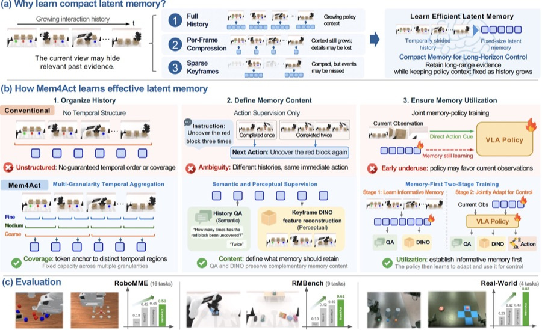
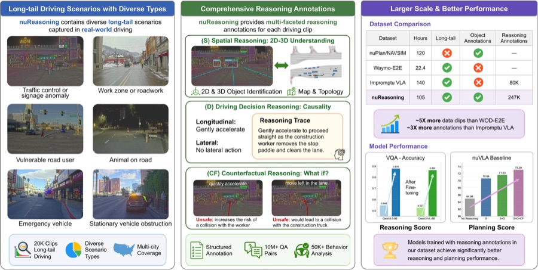
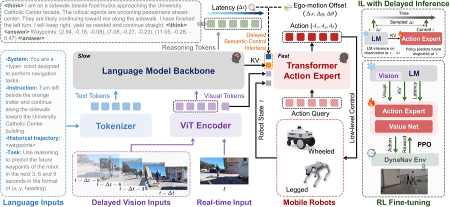
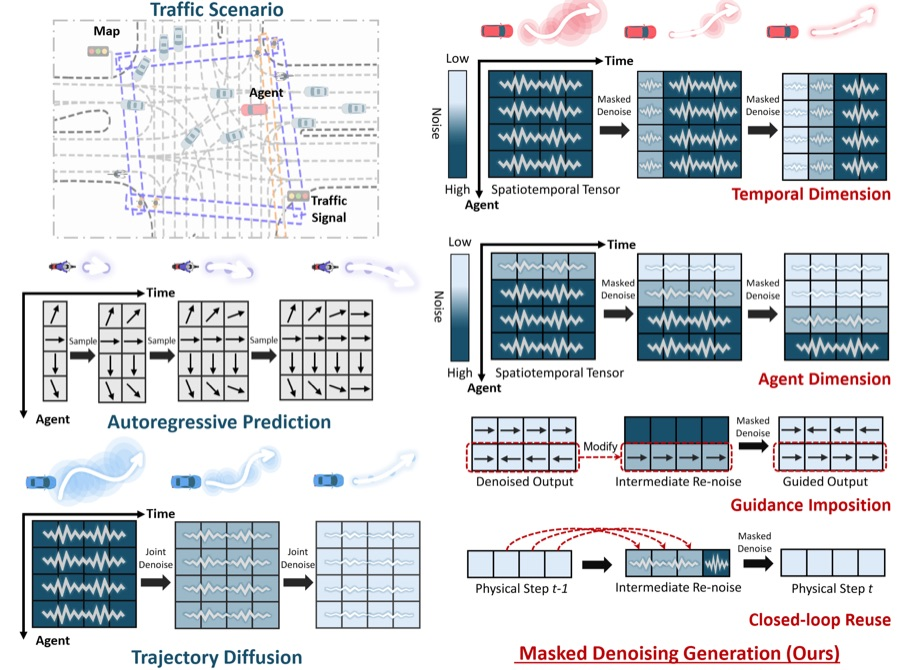
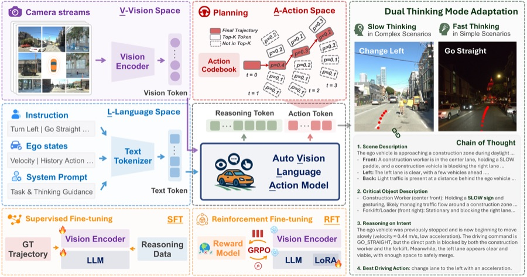
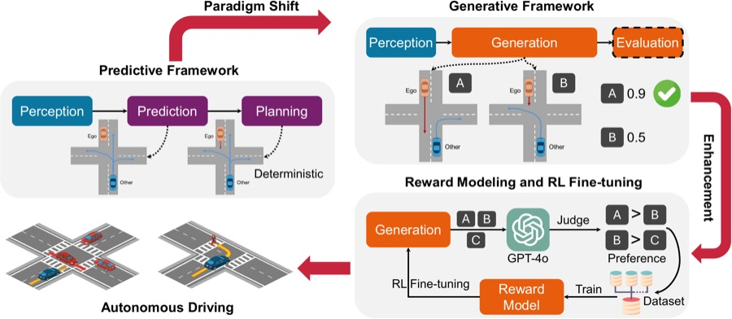
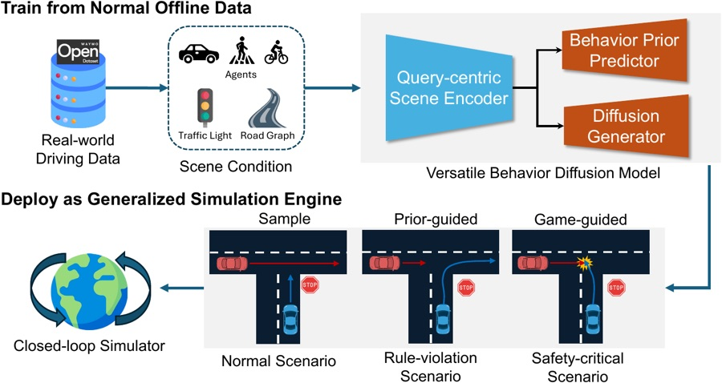
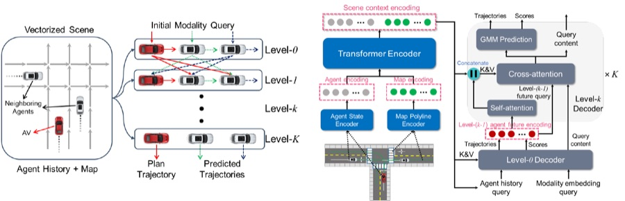

Publications
Papers
A selection of recent work. * equal contribution, † corresponding author. See Google Scholar for the complete list.
Highlights
Selected papers



MDG: Masked Denoising Generation for Multi-Agent Behavior Modeling in Traffic Environments
IEEE/CVF Conference on Computer Vision and Pattern Recognition (CVPR) Findings, 2026




More
Other recent papers
-
EnerGS: Energy-Based Gaussian Splatting with Partial Geometric PriorsRui Song, Tianhui Cai, Markus Gross, Yun Zhang, Walter Zimmer, Zhiyu Huang, Olaf Wysocki, Jiaqi MaInternational Conference on Machine Learning (ICML), 2026
-
RelMap: Enhancing Online Map Construction with Class-Aware Spatial Relation and Semantic PriorsTianhui Cai, Yun Zhang, Zewei Zhou, Zhiyu Huang†, Jiaqi MaIEEE International Conference on Robotics and Automation (ICRA), 2026
-
Driving with Regulation: Trustworthy and Interpretable Decision-Making for Autonomous Driving with Retrieval-Augmented ReasoningTianhui Cai, Yifan Liu, Zewei Zhou, Haoxuan Ma, Seth Z. Zhao, Zhiwen Wu, Xu Han, Zhiyu Huang†, Jiaqi MaAAAI Conference on Artificial Intelligence, 2026
-
TurboTrain: Towards Efficient and Balanced Multi-Task Learning for Multi-Agent Perception and PredictionZewei Zhou, Seth Z. Zhao, Tianhui Cai, Zhiyu Huang†, Bolei Zhou, Jiaqi MaIEEE/CVF International Conference on Computer Vision (ICCV), 2025
-
V2XPnP: Vehicle-to-Everything Spatio-Temporal Fusion for Multi-Agent Perception and PredictionZewei Zhou, …, Zhiyu Huang†, Bolei Zhou, Jiaqi MaIEEE/CVF International Conference on Computer Vision (ICCV), 2025
-
MIC-BEV: Multi-Infrastructure Camera Bird’s-Eye-View Transformer with Relation-Aware Fusion for 3D Object DetectionYun Zhang, Zhaoliang Zheng, Johnson Liu, Zhiyu Huang†, Zewei Zhou, Zonglin Meng, Tianhui Cai, Jiaqi MaarXiv, 2025
-
Hybrid-Prediction Integrated Planning for Autonomous DrivingHaochen Liu, Zhiyu Huang, Wenhui Huang, Haohan Yang, Xiaoyu Mo, Chen LvIEEE Transactions on Pattern Analysis and Machine Intelligence, 2025